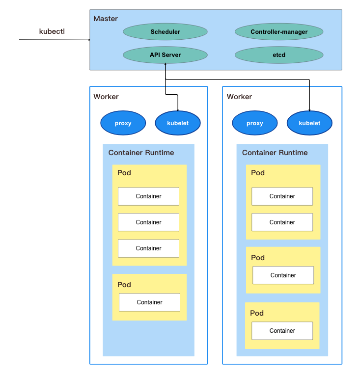

Kubernetes-intro
Kubernetes Introduction
<!--more-->
What is kubernetes?
-
用於自動部署、擴充和管理「容器化」應用程式的開源系統，組成 kubernetes 的設計概念為鬆耦合和可延伸
-
是一個可以幫助<b>管理微服務</b>的系統，其可自動化部署和管理多台機器上的多個容器
-
解決手動部署多個容器到多台機器上並監測管理這些容器的狀態非常麻煩 -
K8S 提供一個平台以<b>較高層次</b>的<b>抽象化</b>去<b>自動化</b>操作和管理容器們
Automated container deployment, scaling, and management
- 同時部署多個 containers 至多台機器上 => Deployment
- 服務的乘載量有變化時，可對容器做自動擴展 => Scaling
- 管理多個 containers 的狀態，自動偵測和遇故障時重啟 container => Management
K8S 4 elements
- Pod
- K8S 運作最小單元，1 pod 對應到 1 個 application. Ex: 1 pod => 1 API server
- 每一個 pod 有一個身分證，就是
yaml檔 - 每一個 pod 可以用有一個至多個的 containers，但通常 1 pod 有一個 container 是最好的
- 同一個 pod 中的 containers 共享相同的資源和網路，彼此透過 local port number 溝通
-
Worker node K8S 運作最小的硬體單位，1 worker node -> 1 台機器(Notebook, VM => AWS EC2 | GCP computer engine) 每個 node 有 3 個元件：
- kubelet: 該 node 的 manager, 負責管理該 node 上所有的 pods 的狀態並負責與 master 溝通
- kube-proxy: 該 node 的傳訊員，負責更新 node 的 iptables，讓 K8S 中不在該 node 的其他物件可以得知，該 node 上所有 pods 的最新狀態
- container runtime: 該 node 中真正負責 container 執行的程式，以 docker 為例，其對應的 container runtime => docker engine
-
Master node K8S 運作指揮中心，一個特化的 node，負責管理所有其他的 node 一個 master node 有 4 個組件：
- kube-apiserver:
- 管理整個 K8S 所需的 API 接口(Endpoint) Ex: 從 command line 下
kubectl指令會傳送到這裡 - 負責 node 之間的溝通橋樑，每個 node 彼此不能直接溝通，須透過 apiserver 轉介
- 負責 K8S 中的請求的身份認證和授權
- 管理整個 K8S 所需的 API 接口(Endpoint) Ex: 從 command line 下
- etcd: 用來存放 K8S Cluster 的 data 做為備份，當 master 因為某些原因而故障時，可透過 etcd 幫忙還原 K8S 的狀態
- kube-controller-manager:
- 負責管理並運行 K8S controller 的組件 => controller 就是 K8S 裡一個個負責監視 Cluster 狀態的 process. Ex: Node Controller, Replication Controller
- 這些 process 會在 Cluster 與預期狀態(desire state)不符時，嘗試更新現有狀態(current state). Ex: 現在要多開多台機器以應付突然增加的流量，預期狀態會更新成 N+1，現有狀態 N，此時相對應的 controller 就會想辦法多開一台機器
- controller-manager 的監視和嘗試更新也都需要透過訪問 kube-apiserver 達成
- kube-scheduler:
- 整個 K8S 的 pods 調度員
- scheduler 會監視新建立但尚未被指定要跑在哪個 node 上的 pod，並根據每個 node 上面的資源規定，硬體限制...條件去協調出一個最適合放置的 node 讓該 pod 跑
- kube-apiserver:
-
Cluster K8S 中多個 node 和 master 的集合 基本上可以想成在同一個環境裡，所有 node 集合在一起的單位
